Dublin (1.18) vs Kerry (0.15) Final Reply
All Ireland Final Reply - 2019
#Summary ##Starting Line Up (Number, Player, Playing time) ###Dublin
###Kerry 
| Dublin | Kerry |
|---|---|
| Murchan (1-0) | O Shea (0-5, 0-3 fk), |
| Byrne (0-1) | Clifford (0-5, 0-1 fk) |
| McCarthy (0-1) | Geaney (0-4), |
| Scully (0-1) | Spillane (0-1) |
| Kilkenny (0-4) | |
| Mannion (0-4) | |
| O Callaghan (0-4) | |
| Rock (0-3, 0-1 45) |
| Team | Score.Eff.. | Shots.PerPoss | Scores.PP | Op.Scores.PP | Fk.Score. | Ko. |
|---|---|---|---|---|---|---|
| Dublin | 64% | 64% | 40% | 40% |
|
92% |
| Kerry | 46% | 61% | 24% | 24% | 100% | 100% |
##Scoring Timeline 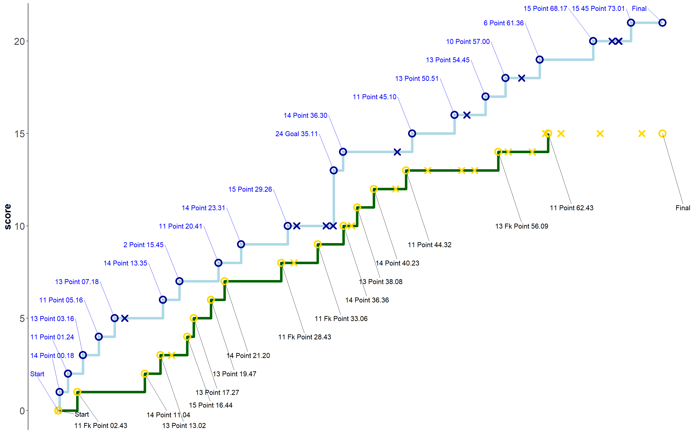
##Score Differential
#Positioning & Possessions ##Average Position by Action ###Dublin ###Game
###Period 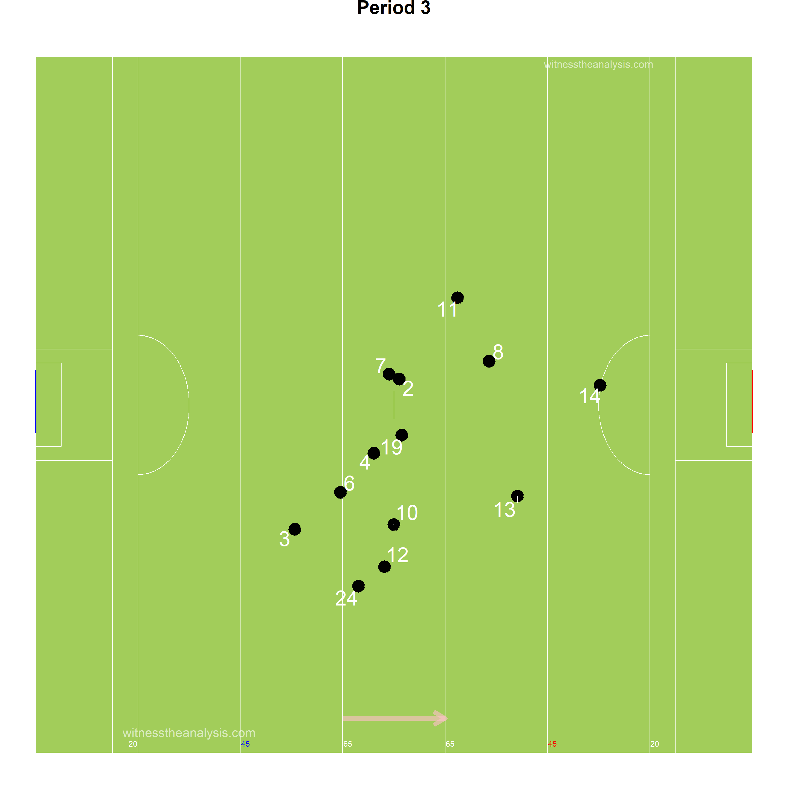
###Kerry ###Game
###Period
##Areas of Play by Possession ###Dublin
###Kerry
##Denisty Map (All Actions) ###Dublin
###Kerry
##Path of Possession
| Lines | X | X.1 | X.2 |
|---|---|---|---|
| Action | Colour | Action | Colour |
| Hand Pass | Black | Kickout Lost | Dark Red |
| Run | Blue | Kick Pass Left | Pink |
| Score | Yellow | Kick Pass Right | White |
| Miss shot | Red | Fk/Mk/Sl Pass | Light Blue |
| Kickout | Gold | Pass Loss | Red |
| Dots | |||
| Action | Colour | ||
| Possession Won | Purple | ||
| Ko/Pass Lost | Red | ||
| Fk Won | Blue | ||
| Fk Won (in 45) | Orange | ||
| Kickout Won | Black |
###Dublin - Game
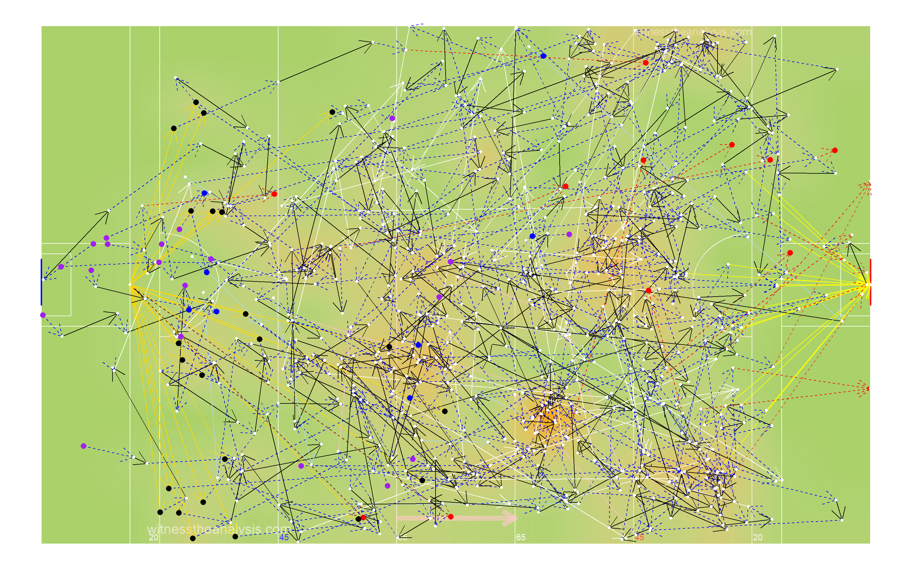
###Pop Starting from Possession Won
###Pop Starting from Kick Out
###Dublin - Period 1
###Dublin - Period 2 
###Dublin - Period 3
###Dublin - Period 4
###Kerry - Game
###Pop Starting from Possession Won
###Pop Starting from Kick Out
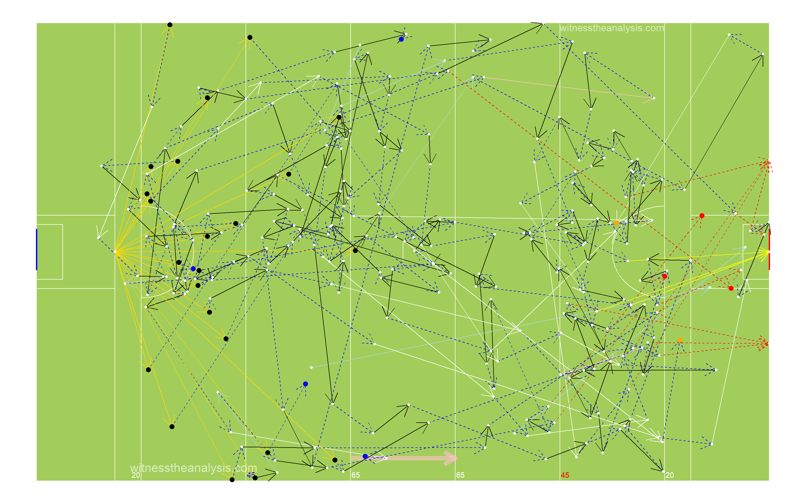
###Kerry Period - 1
###Kerry Period - 2
###Kerry Period - 3
###Kerry Period - 4 
##45 Entries ###Dublin - Game
###Dublin - Period 1
###Dublin - Period 2
###Dublin - Period 3
###Dublin - Period 4
###Kerry - Game
###Kerry - Period 1
###Kerry- Period 2
###Kerry - Period 3

###Kerry - Period 4
###Dublin Total
## count
## 1 63###Dublin Handpass
## count
## 1 7###Dublin Run
## count
## 1 39###Dublin Kick Pass Right
## count
## 1 12###Dublin Pass Lost
## count
## 1 3###Dublin Kick Pass Left
## count
## 1 0###Dublin Fk/Mk/Sl Pass
## count
## 1 2###Kerry Total
## count
## 1 43###Kerry Handpass
## count
## 1 4###Kerry Run
## count
## 1 25###Kerry Kick Pass Right
## count
## 1 7###Kerry Pass Lost
## count
## 1 4###Kerry Kick Pass Left
## count
## 1 1###Kerry Fk/Mk/Sl Pass
## count
## 1 2#General ##Kick Outs ###Dublin
###Kickout Efficiency
###Kickout Network - Dublin
###Kickout Density
###Kerry
###Kickout Efficiency
###Kickout Network - Kerry
###Kickout Density
##Turn overs/Possession Won
###Dublin
###Kerry
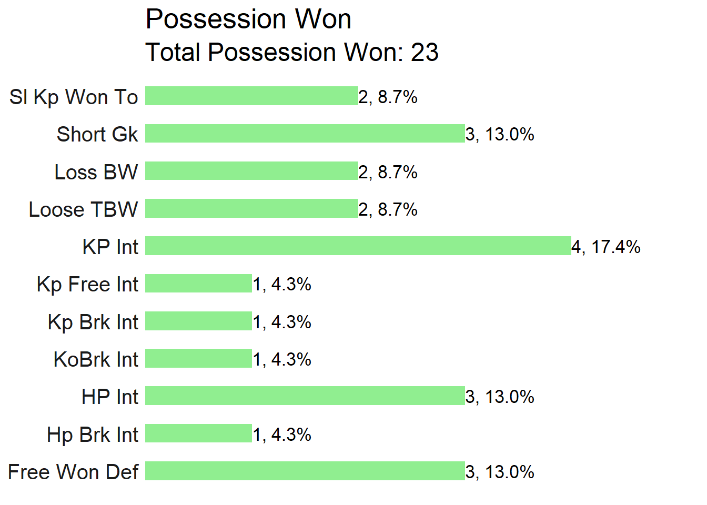
##Frees Won ###Dublin
###Kerry
##Frees Loss ###Dublin
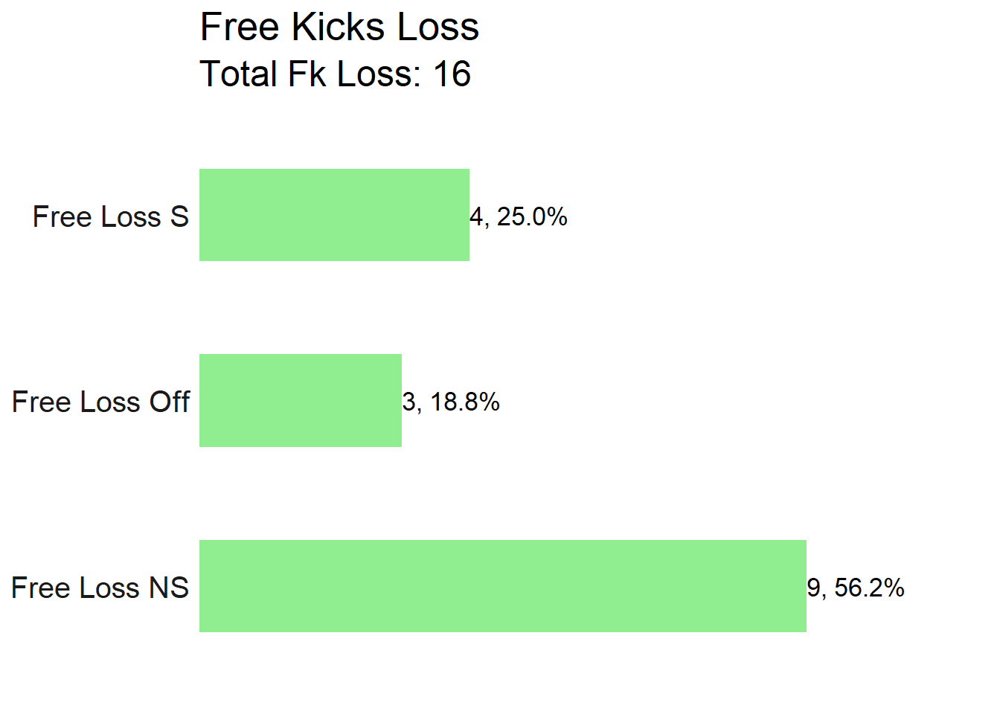
###Kerry

#Attacking
##Attacking Stats| X | Dublin | X.1 | Kerry | X.2 |
|---|---|---|---|---|
| Shot | Score | shot | score | |
| AttTime | 00:19:10 | 00:15:21 | 00:14:54 | 00:07:40 |
| possave | 00:00:43 | 00:00:48 | 00:00:32 | 00:00:31 |
| phaseave | 00:00:31 | 00:00:35 | 00:00:23 | 00:00:20 |
| Origin Type | ||||
| Shot | Score | shot | score | |
| PW | 15 | 11 | 13 | 10 |
| Ko | 12 | 8 | 15 | 5 |
| Pitch Area Origin | ||||
| Shot | Score | shot | score | |
| Def | 21 | 14 | 22 | 11 |
| Def Mid | 5 | 4 | 3 | 2 |
| Att Mid | 1 | 0 | 1 | 1 |
| Att | 2 | 0 | 2 | 1 |
| Poss Duration | ||||
| secs | Shot | Score | shot | score |
| 0-9 | 3 | 1 | 2 | 1 |
| 10-19 | 6 | 3 | 5 | 4 |
| 20-29 | 7 | 4 | 9 | 5 |
| 30-39 | 4 | 4 | 3 | 1 |
| 40-49 | 2 | 2 | 5 | 2 |
| 50-59 | 2 | 0 | 2 | 0 |
| 60-69 | 0 | 0 | 0 | 0 |
| 70+ | 5 | 5 | 2 | 2 |
| Team | Poss | Phase | All.Shots | All.Scores | Shots.Per.Poss | Scores.PP | Shots.Op | Scores.Op | Score.Eff.. | Op.Scores.PP |
|---|---|---|---|---|---|---|---|---|---|---|
| Dublin | 45 | 58 | 29 | 19 | 64% | 42% | 28 | 18 | 64% | 40% |
| Kerry | 46 | 62 | 28 | 15 | 61% | 33% | 24 | 11 | 46% | 24% |
| Team | Poss Time | Ave Poss Shot | Ave Phase Shot | Ave Poss Scr | Ave Phase Scr | Ave Act Poss | Ave Act Sht | Ave Act Scr | ||
| Dublin | 00:29:46 | 00:00:43 | 00:00:31 | 00:00:48 | 00:00:35 | 17.6 | 18.8 | 20.8 | ||
| Kerry | 00:20:14 | 00:00:32 | 00:00:23 | 00:00:31 | 00:00:20 | 13.4 | 16.3 | 14.5 |
| Dublin | Shots | Time..secs. | X | X.1 | X.2 | X.3 | X.4 | X.5 | X.6 |
|---|---|---|---|---|---|---|---|---|---|
| Area | 0-9 | 10-19 | 20-29 | 30-39 | 40-49 | 50-59 | 60-69 | 70+ | Total |
| Def | 0 | 3 | 6 | 3 | 2 | 2 | 0 | 5 | 21 |
| Def Mid | 1 | 2 | 1 | 1 | 0 | 0 | 0 | 0 | 5 |
| Att Mid | 0 | 1 | 0 | 0 | 0 | 0 | 0 | 0 | 1 |
| Att | 2 | 0 | 0 | 0 | 0 | 0 | 0 | 0 | 2 |
| Dublin | Scores | Time (secs) | |||||||
| Area | 0-9 | 10-19 | 20-29 | 30-39 | 40-49 | 50-59 | 60-69 | 70+ | Total |
| Def | 0 | 0 | 4 | 3 | 2 | 0 | 0 | 5 | 14 |
| Def Mid | 1 | 2 | 0 | 1 | 0 | 0 | 0 | 0 | 4 |
| Att Mid | 0 | 1 | 0 | 0 | 0 | 0 | 0 | 0 | 1 |
| Att | 0 | 0 | 0 | 0 | 0 | 0 | 0 | 0 | 0 |
| Kerry | Shots | Time (secs) | |||||||
| Area | 0-9 | 10-19 | 20-29 | 30-39 | 40-49 | 50-59 | 60-69 | 70+ | Total |
| Def | 0 | 4 | 8 | 2 | 5 | 2 | 0 | 1 | 22 |
| Def Mid | 1 | 0 | 1 | 0 | 0 | 0 | 0 | 1 | 3 |
| Att Mid | 0 | 1 | 0 | 0 | 0 | 0 | 0 | 0 | 1 |
| Att | 1 | 0 | 0 | 1 | 0 | 0 | 0 | 0 | 2 |
| Kerry | Scores | Time (secs) | |||||||
| Area | 0-9 | 10-19 | 20-29 | 30-39 | 40-49 | 50-59 | 60-69 | 70+ | Total |
| Def | 0 | 3 | 5 | 0 | 2 | 0 | 0 | 1 | 11 |
| Def Mid | 1 | 0 | 0 | 0 | 0 | 0 | 0 | 1 | 2 |
| Att Mid | 0 | 1 | 0 | 0 | 0 | 0 | 0 | 0 | 1 |
| Att | 0 | 0 | 0 | 1 | 0 | 0 | 0 | 0 | 1 |
| Line.Colour | Time.secs |
|---|---|
| black | 1-9 |
| blue | 10-19 |
| red | 20-29 |
| purple | 30-39 |
| yellow | 40-49 |
| white | 50-59 |
| orange | 60-69 |
| pink | 70+ |
| Dot Colours | |
| Black & White | Ko Rec’d |
| White & Black | PW |
| Blue & White | Fk Pass |
| Red & White | Op Shot |
| Purple & White | Fk Shot |
| Green & White | 45 |
##Shot Possessions ###Dublin 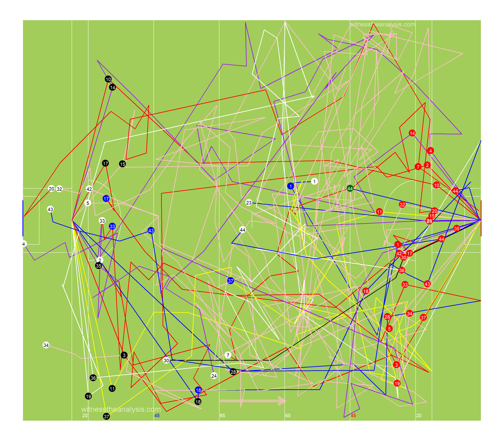
###Kerry
##Score Possessions ###Dublin
###Kerry
##Open Play Shots - Location & Outcome
###Dublin
###Shot Efficiency - Dublin
###Shot Pressure - Dublin
###Shot Density
###Kerry 
###Shot Efficiency - Kerry
###Shot Density
###Shot Pressure - Kerry
##All Shots - Location & Outcome ###Dublin
###All Shot Density
###Free Kick Shot Efficiency - Dublin
###Kerry
###All Shot Density 
###Free Kick Shot Efficiency - Kerry 
##All Shots Origin by Possession ###Dublin (Blue = Score) 
###Kerry (Blue = Score)
##Open Play Shot Origin by Phase ###Dublin (Blue = Score)
###Kerry (Blue = Score)
##Shot Network ###Dublin
###Kerry
##Score Network ###Dublin
###Kerry 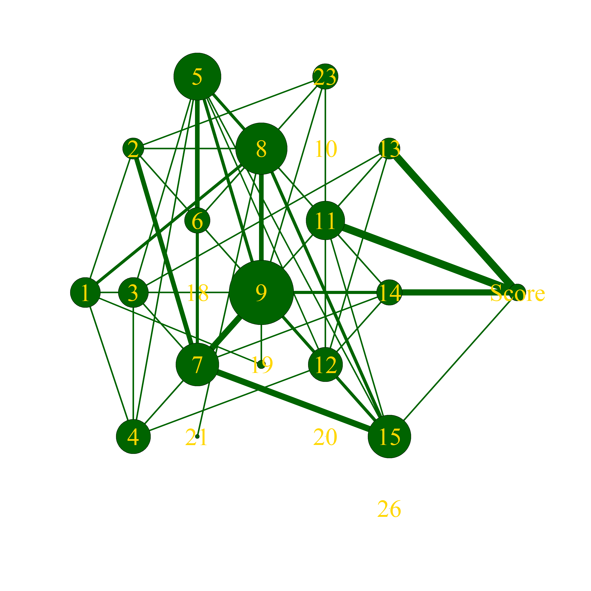
#Passing
##Pass Breakdown| X | Dublin | Kerry |
|---|---|---|
| Hp | 238 | 157 |
| Kp | 53 | 40 |
| Kp Left | 8 | 8 |
| Kp Right | 45 | 32 |
| Fk Pass | 8 | 10 |
| Sl Pass | 0 | 1 |
| Mk Kp | 0 | 0 |
| Mk Hp | 0 | 0 |
| Sl Kp Won To | 0 | 2 |
| 45 Pass | 0 | 0 |
| Hp Assist | 13 | 9 |
| Kp L Assist | 0 | 0 |
| Kp R Assist | 3 | 0 |
| Hp Key | 6 | 12 |
| Kp L Key | 0 | 0 |
| Kp R Key | 1 | 1 |
| Mk Kp Assist | 1 | 0 |
##All Passes ###Dublin
###Kerry
##Passes into 45 ###Dublin
###Kerry
##Passes Inside Opp 65 ###Dublin
###Kerry
##Pass Network ###Dublin
###In Degree (Number of Players a Player Received a Pass from)
## Kilkenny Cooper Howard J Small Fenton O Callaghan Byrne McCarthy Mannion Connolly McCaffrey Murchan Scully Fitzsimons
## 15 13 13 11 10 10 9 9 9 9 8 8 8 6
## Rock McMahon Costello McManamon O Sullivan Cluxton MacAuley
## 5 3 3 2 1 0 0###Out Degree (Number of Players a Player Made a Pass to)
## Cooper Fenton Kilkenny Howard Byrne McCarthy Mannion J Small Scully Murchan O Callaghan Fitzsimons McCaffrey Rock
## 13 13 13 12 11 10 10 9 9 8 8 7 7 5
## Connolly McMahon Costello Cluxton McManamon O Sullivan MacAuley
## 5 3 3 2 2 2 0###Strength in (Number of Passes Received by a Player)
## Kilkenny Cooper Fenton Howard Scully Mannion J Small Murchan McCarthy O Callaghan Byrne Connolly McCaffrey Rock
## 36 31 29 26 22 21 20 19 19 19 18 14 10 8
## Fitzsimons McMahon Costello McManamon O Sullivan Cluxton MacAuley
## 7 5 3 3 1 0 0###Strength Out (Number of Passes/Shots Made by a Player)
## Cooper Kilkenny Fenton Howard Murchan Scully J Small McCarthy Byrne Mannion O Callaghan Fitzsimons McCaffrey Connolly
## 37 34 32 27 25 22 21 18 16 14 13 12 11 9
## Rock Costello Cluxton McMahon McManamon O Sullivan MacAuley
## 6 4 3 3 2 2 0###Betweenness Centrality (Flow of Passes through a Player)
## Kilkenny Howard Byrne Fenton Connolly O Callaghan Cooper McCaffrey J Small Rock McCarthy Costello Mannion Fitzsimons
## 0.101223869 0.073261043 0.064921691 0.043643851 0.042834610 0.038808742 0.036185190 0.030822153 0.023204098 0.020307446 0.016986681 0.003849396 0.003763039 0.003451939
## McMahon Scully Murchan Cluxton McManamon O Sullivan MacAuley
## 0.002704678 0.002598395 0.001959494 0.000000000 0.000000000 0.000000000 0.000000000###Closeness Centrality (How Well connected and central a Player is within the Teams Network)
## Kilkenny Howard Fenton Byrne Cooper J Small McCarthy O Callaghan Scully Mannion Connolly McCaffrey Murchan Fitzsimons
## 0.47619048 0.46511628 0.45454545 0.44444444 0.44444444 0.43478261 0.43478261 0.43478261 0.42553191 0.42553191 0.41666667 0.40000000 0.40000000 0.39215686
## Rock Costello McMahon O Sullivan McManamon Cluxton MacAuley
## 0.38461538 0.36363636 0.35714286 0.34482759 0.32786885 0.32258065 0.04761905###Entropy (The Unpredictability in who a Player Passes to/Takes shot)
## J Small Cluxton Fenton Mannion Cooper Connolly Howard Byrne McCarthy O Callaghan Murchan Scully Kilkenny Rock
## 0.9007979 0.9182958 0.9253172 0.9306296 0.9348689 0.9368815 0.9515340 0.9517424 0.9526440 0.9535926 0.9549774 0.9555297 0.9565360 0.9578792
## McManamon Fitzsimons McMahon McCaffrey Costello O Sullivan
## 0.9609640 0.9665386 0.9671320 0.9687862 0.9755038 1.0000000###Global clustering coefficient (Groups of Players who pass to each other)
## [1] 0.7361478###eigen_centrality (How well connected the well connected are)
## Cooper Kilkenny Fenton Howard Scully Murchan J Small Mannion McCarthy Byrne O Callaghan Connolly McCaffrey Fitzsimons
## 1.00000000 0.87149964 0.84152917 0.74023393 0.69986692 0.69686060 0.64187651 0.54873970 0.52026297 0.44514337 0.40594094 0.32647288 0.30874003 0.28311449
## Rock McMahon Costello O Sullivan McManamon Cluxton MacAuley
## 0.16045082 0.13956499 0.08688791 0.05448719 0.03608326 0.02662806 0.01977571##Kerry 
###In Degree (Number of Players a Player Received a Pass from)
## Moran Barry Clifford O Sullivan Murphy Geaney Crowley O Shea O Brien Morley O Connor O Beaglaoich Foley
## 12 12 11 9 9 9 8 8 8 7 7 6 5
## A Spillane White Sherwood Ryan Walsh K Spillane O Donoghue Moynihan
## 5 5 3 2 2 2 2 0###Out Degree (Number of Players a Player Made a Pass to)
## Murphy Moran Barry Morley O Sullivan O Shea Crowley O Beaglaoich O Brien Clifford Geaney A Spillane Ryan
## 10 10 10 9 9 9 7 7 7 7 7 7 6
## Foley O Connor White Walsh O Donoghue Sherwood K Spillane Moynihan
## 6 5 5 5 3 2 1 0###Strength in (Number of Passes Received by a Player)
## Moran Barry Geaney Murphy O Sullivan Crowley O Shea Clifford Morley O Beaglaoich A Spillane O Brien O Connor
## 23 23 18 15 14 13 13 13 12 12 12 11 8
## White Walsh Foley Ryan Sherwood K Spillane O Donoghue Moynihan
## 7 6 5 3 3 2 2 0###Strength Out (Number of Passes/Shots Made by a Player)
## Barry Murphy Moran O Sullivan Morley Crowley O Beaglaoich O Shea A Spillane Foley Clifford Geaney O Brien
## 26 20 20 15 14 13 13 13 12 9 9 9 8
## Ryan O Connor White Walsh Sherwood O Donoghue K Spillane Moynihan
## 7 6 6 6 5 3 1 0###Betweenness Centrality (Flow of Passes through a Player)
## Clifford Moran O Shea Morley Barry Crowley Murphy O Sullivan White O Brien Walsh Foley O Connor
## 0.1030479681 0.1010212715 0.0429175406 0.0391227271 0.0363157505 0.0323958102 0.0243805094 0.0231668000 0.0186285343 0.0170021366 0.0152185044 0.0135438716 0.0092112038
## Geaney O Beaglaoich A Spillane Sherwood Ryan O Donoghue K Spillane Moynihan
## 0.0086312148 0.0059788062 0.0042065581 0.0018623482 0.0016290727 0.0010614772 0.0006578947 0.0000000000###Closeness Centrality (How Well connected and central a Player is within the Teams Network)
## Clifford Moran Barry Murphy Morley O Sullivan Crowley O Shea Geaney O Beaglaoich O Brien Foley A Spillane
## 0.45454545 0.44444444 0.44444444 0.43478261 0.42553191 0.42553191 0.42553191 0.41666667 0.41666667 0.40816327 0.40816327 0.40000000 0.40000000
## O Connor White Walsh Ryan O Donoghue Sherwood K Spillane Moynihan
## 0.39215686 0.39215686 0.37735849 0.37037037 0.37037037 0.36363636 0.35087719 0.04761905###Entropy (The Unpredictability in who a Player Passes to/Takes shot)
## Sherwood Walsh O Beaglaoich O Sullivan A Spillane Morley Barry Foley Moran Geaney Crowley Murphy O Brien
## 0.9283832 0.9353340 0.9441204 0.9500001 0.9504334 0.9563129 0.9580536 0.9611009 0.9637273 0.9640491 0.9642408 0.9686413 0.9693499
## O Shea Ryan White Clifford O Connor K Spillane O Donoghue
## 0.9734885 0.9739760 0.9750064 0.9822228 0.9823368 1.0000000 1.0000000###Global clustering coefficient (Groups of Players who pass to each other)
## [1] 0.5968085###eigen_centrality (How well connected the well connected are)
## Barry Moran Murphy O Sullivan A Spillane Geaney Morley O Beaglaoich O Shea Crowley O Brien Clifford O Connor
## 1.000000000 0.813426875 0.755541903 0.629634407 0.593087671 0.581116286 0.579723293 0.551652966 0.510075952 0.508397700 0.366776166 0.310531393 0.269041315
## Foley White Ryan Walsh Sherwood O Donoghue K Spillane Moynihan
## 0.233355441 0.214043003 0.206573191 0.202047806 0.139957310 0.085044360 0.036022849 0.008218979#Player Stats ##Player On Ball Possession (Number, Player, Total) ###Dublin
###Kerry
##Posessions Per Playing Time

| Team | ply | opshots | Totteamshot | opscr | Totteamscr | convrate |
|---|---|---|---|---|---|---|
| Dublin | Cluxton | 0 | 0% | 0 | 0% |
|
| Dublin | Byrne | 1 | 4% | 1 | 6% | 1 |
| Dublin | Fitzsimons | 0 | 0% | 0 | 0% |
|
| Dublin | Cooper | 0 | 0% | 0 | 0% |
|
| Dublin | McCaffrey | 0 | 0% | 0 | 0% |
|
| Dublin | J Small | 0 | 0% | 0 | 0% |
|
| Dublin | Murchan | 1 | 4% | 1 | 6% | 1 |
| Dublin | McCarthy | 1 | 4% | 1 | 6% | 1 |
| Dublin | Fenton | 1 | 4% | 0 | 0% | 0 |
| Dublin | Scully | 1 | 4% | 1 | 6% | 1 |
| Dublin | Kilkenny | 4 | 14% | 4 | 22% | 1 |
| Dublin | Howard | 0 | 0% | 0 | 0% |
|
| Dublin | Mannion | 7 | 25% | 4 | 22% | 0.571428571 |
| Dublin | O Callaghan | 7 | 25% | 4 | 22% | 0.571428571 |
| Dublin | Rock | 2 | 7% | 2 | 11% | 1 |
| Dublin | Connolly | 2 | 7% | 0 | 0% | 0 |
| Dublin | McMahon | 0 | 0% | 0 | 0% |
|
| Dublin | Costello | 0 | 0% | 0 | 0% |
|
| Dublin | McManamon | 1 | 4% | 0 | 0% | 0 |
| Dublin | O Sullivan | 0 | 0% | 0 | 0% |
|
| Dublin | MacAuley | 0 | 0% | 0 | 0% |
|
| Team | ply | opshots | Totteamshot | opscr | Totteamscr | convrate |
|---|---|---|---|---|---|---|
| Kerry | Ryan | 0 | 0% | 0 | 0% |
|
| Kerry | Foley | 0 | 0% | 0 | 0% |
|
| Kerry | Morley | 0 | 0% | 0 | 0% |
|
| Kerry | O Sullivan | 1 | 4% | 0 | 0% | 0 |
| Kerry | Murphy | 0 | 0% | 0 | 0% |
|
| Kerry | Crowley | 0 | 0% | 0 | 0% |
|
| Kerry | O Beaglaoich | 0 | 0% | 0 | 0% |
|
| Kerry | Moran | 3 | 13% | 0 | 0% | 0 |
| Kerry | Barry | 1 | 4% | 0 | 0% | 0 |
| Kerry | O Connor | 1 | 4% | 0 | 0% | 0 |
| Kerry | O Shea | 2 | 8% | 2 | 18% | 1 |
| Kerry | O Brien | 2 | 8% | 0 | 0% | 0 |
| Kerry | Clifford | 6 | 25% | 4 | 36% | 0.666666667 |
| Kerry | Geaney | 5 | 21% | 4 | 36% | 0.8 |
| Kerry | A Spillane | 1 | 4% | 1 | 9% | 1 |
| Kerry | Sherwood | 1 | 4% | 0 | 0% | 0 |
| Kerry | White | 0 | 0% | 0 | 0% |
|
| Kerry | Walsh | 0 | 0% | 0 | 0% |
|
| Kerry | K Spillane | 1 | 4% | 0 | 0% | 0 |
| Kerry | O Donoghue | 0 | 0% | 0 | 0% |
|
| Kerry | Moynihan | 0 | 0% | 0 | 0% |
|
##Open Play Shots vs Playing Time
##Open Play Scores vs Playing Time
##Open Play Shots vs Open Play Score
##Open Play Assists vs Playing Time
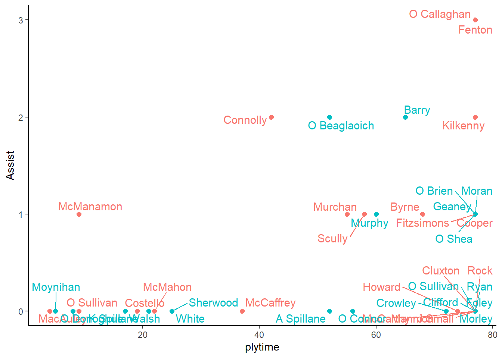
##Open Play Key Passes vs Playing time

##Player Possession Involvement ###Dublin
###Kerry
##Player Shot Involvement ###Dublin
###Kerry
##Player Score Involvement ###Dublin
###Kerry 
##Actions and Zones ##By Period ###Dublin

###Kerry 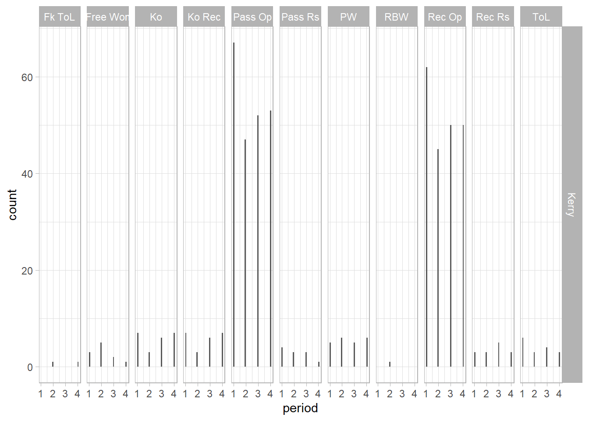
##Zones Frequency ###Dublin
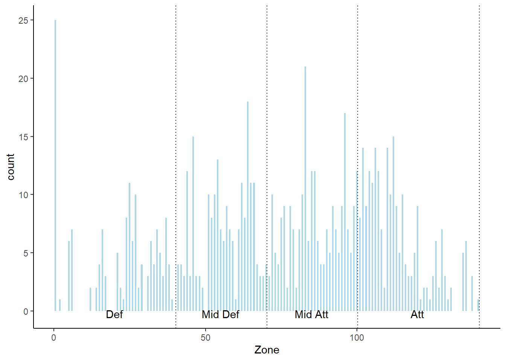
###Kerry